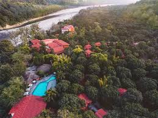
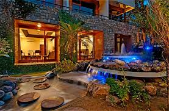

1.Taj Corbett Resort & Spa, Uttarakhand
(Move to link)Amid a canopy of Sal trees of the renowned Kumaon region, Taj Corbett Resort & Spa Uttarakhand, lies nestled in the foothills of the Himalayas, a scenic four hour drive from Dehradun or a five-hour drive from Delhi. This beautiful refuge is surrounded by the legendary Jim Corbett National Park, home to enigmatic wildlife and the first National Park in the country. At the Taj Corbett, the wilderness and our commitment to sustainability does not limit luxurious living. Our 75 luxurious rooms and suites are equipped with modern amenities and contemporary interiors for an exemplary stay. Your holiday only gets better with our chefs displaying their culinary prowess across our restaurants and bar with everything from perfectly cooked grills to local thalis and delicious cocktails. With the Kosi River flowing by, you can let loose your inner adventurer on jungle trails and activities on the lawn by the riverside and spectacular Himalayan mountain drives. Return to sheer indulgence with a dip in our swimming pool or a pampering treatment at the J Wellness Circle spa. For those who love to do something different, our venues are ideal for your big day or team-building meetings. At the Taj Corbett, our exceptional service helps your loved one and you reconnect with nature in indulgent luxury as the raw elegance of the forest awaits.
2.Corbett Machaan Resort

(Move to link)Come and experience wildlife and nature in true sense at Corbett Machaan Resort. At Corbett Machaan, we offer an authentic jungle experience with luxury accommodation, mouth watering cuisines & plenty of recreational facilities for the tourist to enjoy the true wildlife spirit & flavor of wild side of Corbett. Corbett Machaan Resort is full of natural vegetation which is also home to more than 50 species of birds and provides a true jungle experience to its guests and one gets the opportunity to see the wildlife from resort itself. At Corbett Machaan Resort modern luxury, comfort, convenience & leisure are vividly evident throughout our AC luxury huts & AC luxury Villa which add to the magnificence of the natural environment. All of our huts & Villa have attached baths & provide all basic amenities such as running hot & cold water, electricity, comfort & cleanness
3.The Tattwaa Corbett Spa & Resort

(Move to link)Dhikala forest lodge is run and managed by forest department under Corbett national park, it is located in the core area of Corbett national park. The entry gate for Dhikala is Dhangadi gate. You have to show your permits to forest guards here at this point. Dhikala forest lodge is 30 kms from Dhangadi gate, and it will take around 01 Hr to 01 Hr 15 Mins to cover this distance. This journey from Dhangadi gate to Dhikala itself is full of adventures, you have to cross dense sal forest and Ramganga River with several seasonal rivers, the animals you are most likely to spot while going to Dhikala are herds of spotted deer, Barking deer, Sambhar, Barasinga, Elephants, and Hyena, Fox, Monitor Lizard and even Tigers also. Its location at core area of Corbett national park made it a perfect place to stay for wildlife enthusiast.
4.Corbett Suman Grand
(Move to link)Corbett Suman Grand is a boutique resort at Jim Corbett National Park. Sharing Reserve Forest boundary where one can see the wild life during night, right from the balcony of our Premium cottages and Kosi flowing behind the resort make this resort even more interesting and enchanting. Equipped with all modern amenities and facilities this resort is an excellent blend of modernity and nature in its original form. Personalized hospitality and serene ambience makes this resort a little more special place for your perfect holiday.
5.Vow Resorts & SPA - CORBETT

(Move to link)The Theme based 68 Rooms & Cottages at Vow (Voyage of Wonder) Resorts And Spa, Corbettt cleverly reflect the cultural history of Uttarakhand. Expect rural artworks, statues and hints of tribal culture. Each cottage & room features air conditioning, a dressing room, with amazing views and a separate seating area. Treat yourself to a luxury suite, . You will not need to worry about a thing from the moment you step into this amazing resort in Corbett, Meals inclusion according to meal plan. Authentic flavours are on the table as you sit down for unique dining experiences, The resort is just few kilometers away from the Sitavani Corbett Gate of Corbett Tiger Reserve and also 1 hour drive to queen of hills Nainital..
6.Seven Corbett Resort
(Move to link)Whenever anyone visits the Jim Corbett National Park, they always try finding a luxurious Jim Corbett Resort which can be a perfect example of comfort and elegance in the wilderness. The Seven Corbett Resort is the symbol of the famous saying that people in India strongly believe in and follow i.e. “Atithi Devo Bhava” or “Vasudhaiva Kutumbakam”. We, here, at our resort in Jim Corbett, believe if we serve good to our guests, good will always find its way to us and will help us improve our quality service.
7.Corbett Nirvana Resort
(Move to link)Corbett Nirvana Resort is a blissful cocoon amidst verdant nature providing an undulating view of the scenic mountain ranges, built with highly equipped and elegant furnishings to ensure your peaceful stay. The Resort is located in the heart of Jim Corbett National Park, one of India’s most popular wildlife destinations. Surrounded by lush green forests and breathtaking landscapes, our resort offers a tranquil escape from the hustle and the bustle of city life. The resort is designed by highlighting the beauty of nature to provide maximum comfort, with amenities such as air-conditioning, attached baths, and private balconies overlooking the stunning surroundings. Whether you are here for a family vacation, a romantic getaway, For a solo adventure, we have something to offer everyone.
8.The Rangers Reserve
(Move to link)The Rangers Reserve was created on a virgin hill where nature still exists as it did for centuries. Every care was taken to maintain ecology by not cutting even a single tree and enforcing a seamless blend of design, luxury and topography, so that man could view wonders of the wild exactly the way nature created it. Our belief that we live on land leased from nature led us passionately to preserve the natural heritage in difference to our love for flora and fauna of the region. That is why we dedicated this marvelous home to the nature, to which it belongs